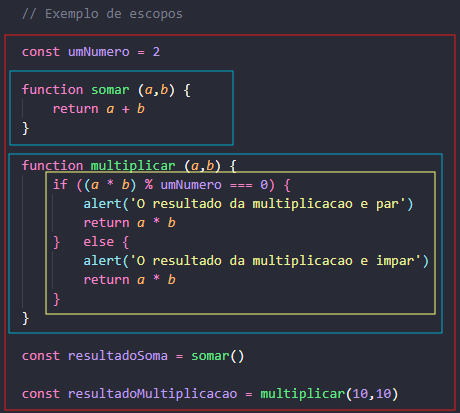

Em JavaScript, são considerados 3 escopos: Escopo Global, Escopo de Função e Escopo de Bloco. Nesta ordem, seguem uma hierarquia onde o escopo de bloco consegue acessar uma variável declarada tanto no escopo de função quanto no global. Já o escopo de função acessa apenas as variáveis declaradas no escopo global. Ele não acessa o escopo de bloco. Por fim, o escopo global não tem acesso a nenhuma variável declarada dentro de um escopo de função ou de bloco.
Se você definir uma variável dentro de uma function por exemplo, e chamar a variável em um console log ou alert, fora da função, não vai funcionar. Somente se incluir um return e criar uma nova variável a nível global para conseguir ter o valor declarado dentra da função. Você pode chamar o console log ou alert dentro da própria função. Dessa forma funciona normalmente.
Abaixo um exemplo utilizando o alert dentro do escopo da função.

Abaixo um exemplo que, além de utilizar o alert para trazer um resultado na execução da função, usou um return para utilizar o resultado em uma nova variável.

No exemplo abaixo, o quadrado vermelho representa o escopo global. Os quadrados azuis representam escopos de função, e o amarelo seria um escopo de bloco. Perceba que a variável umNumero foi chamada dentro do escopo de bloco, mesmo estando no escopo global. Já o contrário, somente com a utilização de return, conforme foi feito para levar o resultado da função para o escopo global.
